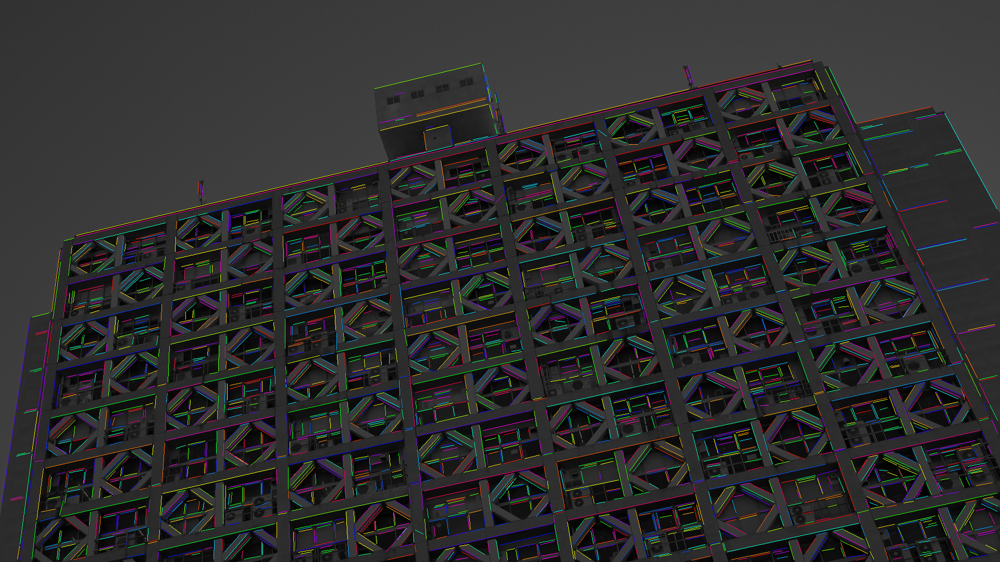
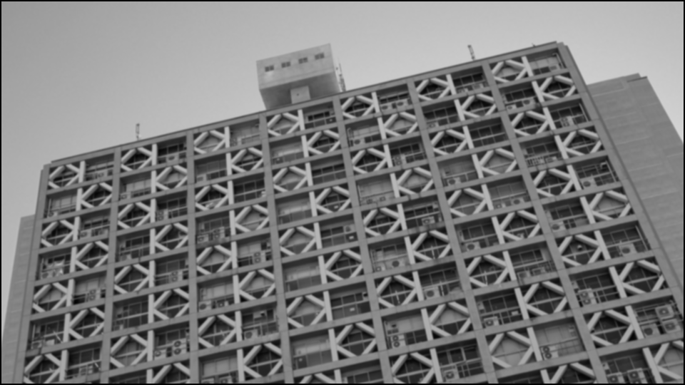
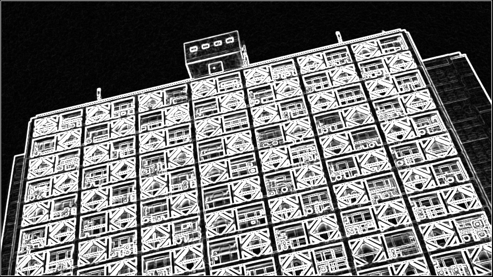
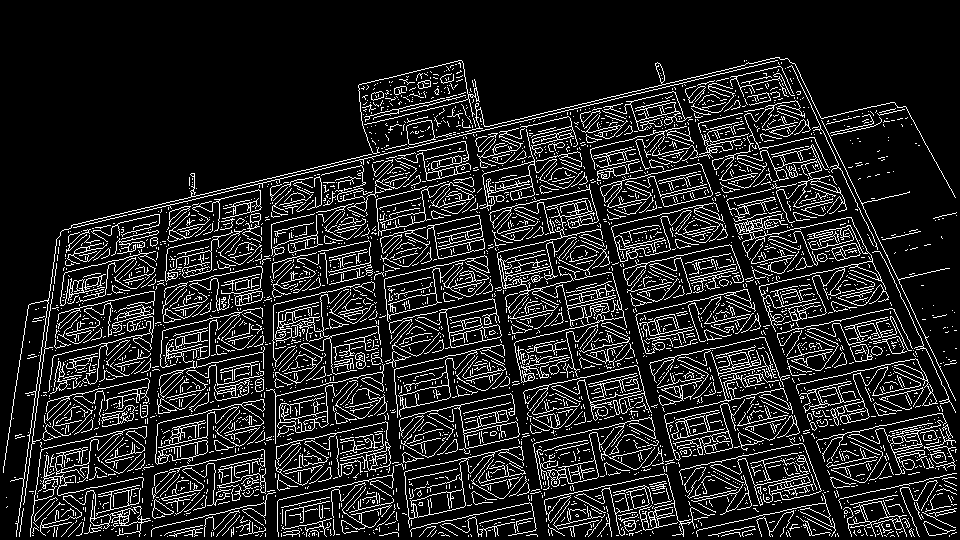
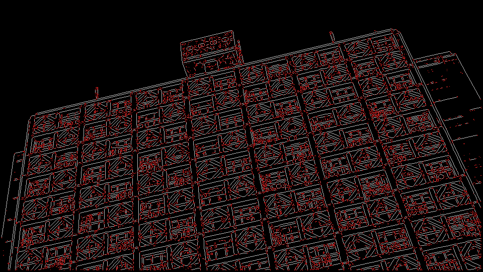
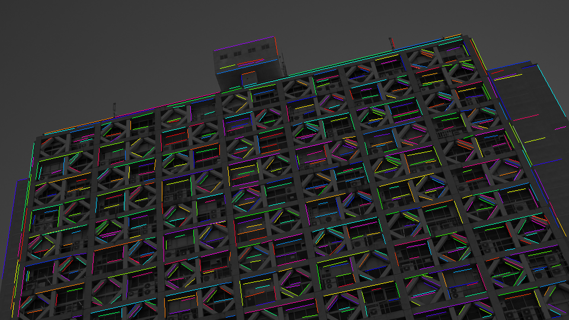

One sweep, all segments. A one-pass, O(width)-memory line segment detector with an integer-only streaming core.

Full-HD photo, 2938 segments in ~17 ms (one detector sweep, single thread).
Five stages, each a simple row kernel. The figures below are the actual intermediates
(sweeplsd_dump_stages) on a 960×540 photo.





>>10 rescale. The vertical pass fits exactly in uint16, so the compiler
auto-vectorizes it 16 lanes wide.The library ships two drivers over the same kernels, tested to produce identical output:
| driver | what it does | memory | speed (Full-HD) |
|---|---|---|---|
detect() | one full-image pass per stage — easiest to read and debug | O(pixels) | ~21 ms |
detectOnePass() | single top-to-bottom sweep; each stage keeps only the rows the next stage needs; labelling trails the input by 7 rows | O(width) | ~17 ms |
The per-pixel core is integer-only (the thesis targeted an FPGA datapath); floating point appears only in the once-per-segment finalization (PCA, endpoint projection). There are no SIMD intrinsics anywhere — the kernels are written so GCC/Clang auto-vectorize them, which keeps the code readable and portable.
The hardware-friendliness is not hypothetical: the detector runs live on a 2009-era FPGA — HDMI in → detect → overlay out at 1080p30, with no frame buffer.
Params{} is SweepLSD as published: the refinements below are all enabled, and
each was added only after measuring its effect on the three evaluation axes (synthetic-GT
F-score, real-photo inspection, downstream vanishing points). Each can be disabled
individually, and Params::original2014() reproduces the 2014 thesis
implementation's behaviour:
| improvement | what | measured effect |
|---|---|---|
| strict NMS tie-break | gradient plateaus thin to 1 px instead of 2 | cleaner edges, fewer duplicate labels |
| sub-pixel NMS | parabolic peak interpolation accumulated into the moments | lateral error ↓ |
| streaming hysteresis | low extraction threshold + per-label strong-pixel requirement; the low threshold adapts to the image noise floor (O(1) state) | recall ↑ on clean images without flooding noisy ones |
| endpoints from projection extremes | bounding-box corners projected on the fitted axis | robust when a label has >2 endpoint contacts |
| curve rejection | absolute bound on the perpendicular RMS spread | circles/arcs rejected by design (see the isotropy page) |
| border margin | drop segments hugging the image frame | belt-and-suspenders on top of the outer-3 px edge exclusion (which already zeroes the 2×2-gradient border ring) |
| half-pixel lattice shift | the 2×2 gradient lives on pixel corners; output is shifted +0.5 px (canonical LSD applies the same correction) | systematic −0.5 px bias → 0; lateral error 0.92→0.12 px |
All refinements preserve the streaming / O(width) property. One optional feature is
off by default: a gap-tolerant collinear linker (link_collinear) that
re-assembles fragments across junction cuts and noise breaks — its measured effect is
reported on the quality and
vanishing-point pages, always explicitly labelled.